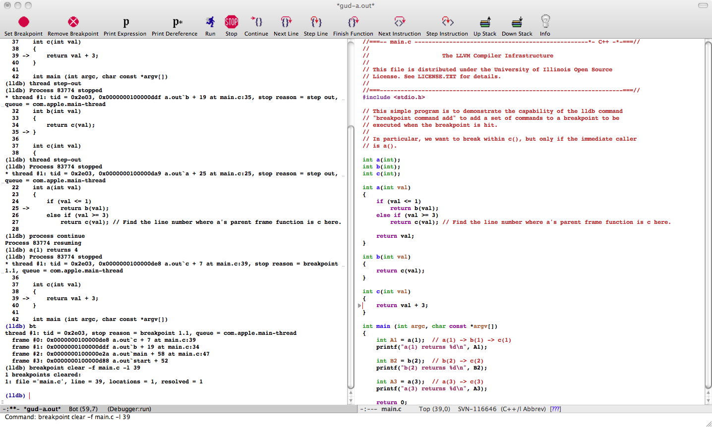

Status
LLDB supports Emacs integration through customizing the GUD (Grand Unified Debugger) library. Take a look at Grand Unified Debugger and the Emacs Wiki Page for more details.
The lldb-enhanced gud.el is based on the emacs 22.3.1 version from Aquamacs 1.8c distribution. To use it, within emacs, load the gud.el file located under the utils/emacs directory. Type 'M-x lldb' to invoke lldb. The first time you do this, emacs will ask you to supply the command line to invoke lldb. If lldb is not in your PATH, be sure to specify the full path to the lldb executable.
This is a screen shot of the gud (with lldb) at work on Aquamacs distribution 2.1 by loading gud.el and 'M-x lldb' on the a.out file in the test/functionalities/conditional_break directory:

We welcome any help fleshing out missing pieces and improving the elisp code.
Last Update: Oct 05, 2011.